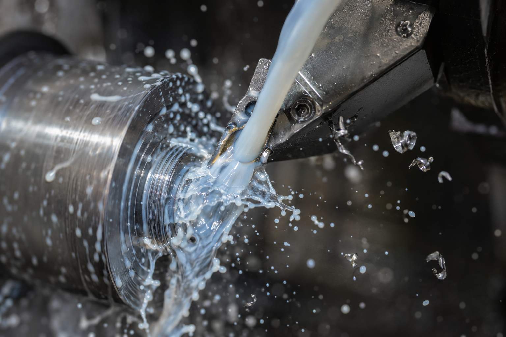
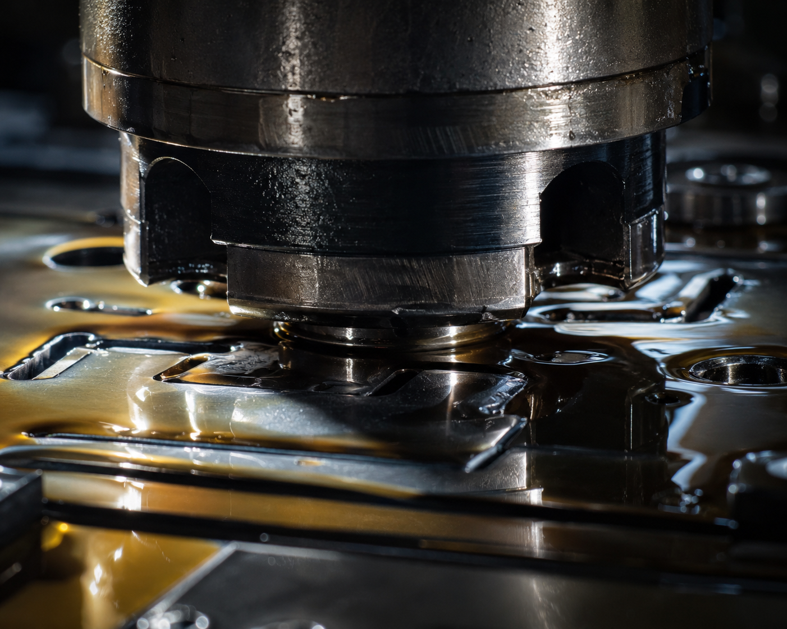
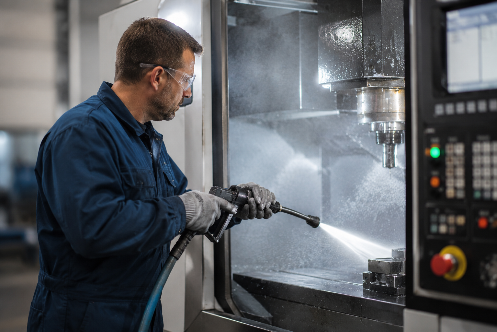
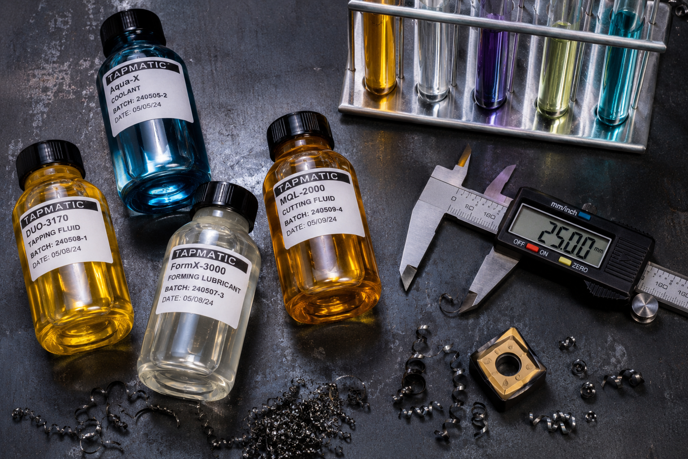
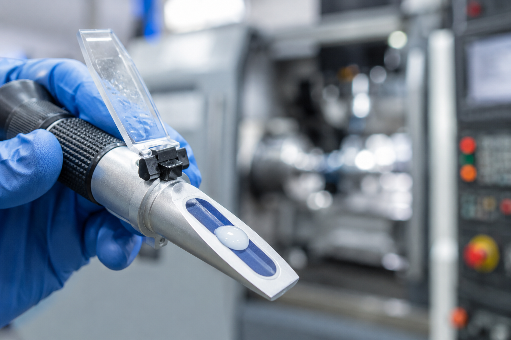

Sustentabilidade
Fluidos biodegradáveis: mito ou realidade?
Entenda o que torna um fluido realmente biodegradável e quais são os benefícios práticos para a operação e o meio ambiente.
6 minLer mais
Artigos técnicos, dicas de processo e novidades sobre fluidos industriais, usinagem e estampagem.

Entenda os critérios técnicos que determinam o melhor fluido de corte para cada material, operação e máquina.

Práticas e produtos que ampliam a vida útil de moldes e reduzem paradas não programadas na linha de produção.

Como um protocolo correto de limpeza previne falhas, contaminações e aumenta a durabilidade dos equipamentos.
Entenda o que torna um fluido realmente biodegradável e quais são os benefícios práticos para a operação e o meio ambiente.

Preço de lista não é custo de uso. Aprenda a calcular o custo real por peça usinada e tome decisões mais inteligentes.

A concentração errada do fluido solúvel pode gerar corrosão, mau cheiro e redução de vida de ferramenta. Saiba como controlar.